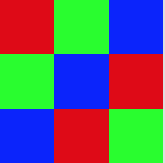

The last section! No new material here. Instead, this contains a number of practice problems to help you prepare you for the final exam. Your section leader will guide you through some of these problems. Please ask questions if you have them!
|
Recall our definition of Computer Science:
The process of finding solutions to difficult or complex issues by defining a set of steps or instructions to be run by a computer for accomplishing a particular task When we write out these steps, there are called algorithms. Algorithms can be written in many ways, and in class we talked about writing them both as instruction outlines and flow diagrams. For each of the below, come up with an algorithm to go from the starting point to the solutions.
|
Recall that one way text is represented on a computer hard drive is in ASCII format.
If you need a refresher, go back and reference the lecture slides.
Convert the below lines of text to both the DECIMAL and BINARY ASCII representation:
|
Below are several lines of binary data.
Convert these to their corresponding ASCII text:
|
|  | When talking about how information is represented earlier this semester we also talked about image files. Specifically, we created some BMP image files by-hand. Create a BMP image that looks like the one to the left when opened up in an image editor: |
Below is a small snippet of processing code with three variables declared at the beginning.
Determine the numeric value that will be stored in each of these variables after this code as been executed.
|
Below is a small snippet of processing code with three variables declared at the beginning.
Determine the numeric value that will be stored in each of these variables after this code as been executed.
|
| Recall the many components of a computer that we discussed awhile back in class. Draw a diagram similar to the one that was showed on the slides in class of the components of a computer. Make sure to include the following components at least: CPU, RAM, Hard Drive, Video Card, monitor, keyboard, and mouse. Draw arrows between the components that directly communicate/interact with eachother. |
| When designating the layout of a computer network, this is done with a network diagram. Network diagrams are composed of icons of nodes, routers, switches, and the internet. Lines indicate connections between the parts of the network. Draw a computer diagram that has 4 nodes connected to a single router, and the router gives each of the nodes access to the internet. |
| We discussed many types of securirity attacks made on users of computers. Describe three of the attacks that we talked about. For each one, suggest a specific way that a user could protect themselves from such an attack. |
Below is a string variable in Procesing.
length() and charAt() methods to loop through and extract individual characters.
|